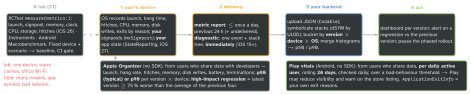
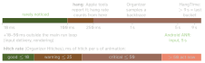

debugging · folio
In one line: The lab tells you whether a build can be fast; only the field tells you whether users’ devices are. The OS measures launch, hangs, hitches, memory, disk, CPU, battery and why the app died, aggregates it per day, and hands it to you (MetricKit) or to Apple (Organizer) / Google (Play vitals). Read percentiles per app version and device, never an average, and gate each release on them.
Download PDF Print view LaTeX source


MetricKit — the iOS 27 API
MetricManager— an instance, not a singleton: keep one. With two, loops over one sequence each get a non-deterministic subset.metricReports→ a dailyMetricReport:intervalEntries(incl. the full day) +stateEntries, values areMetricResultcases with ametricGroup.diagnosticReports→ oneDiagnosticReportper event. Both never throw;Codable.- Deprecated in 27.2:
MXMetricManager+ subscriberdidReceive(_:)(iOS 13 metrics, 14 diagnostics) and every otherMX…type. - Device only; Debug › MetricKit › Simulate MetricKit Payloads = sample data, not yours.
- StateReporting (27): domains passed to
init(enabledStateReportingDomains:); one state per domain at a time (A/B arm, tab); only stable metadata counts; too many states →hasExceededStateLimit.
What each metric measures (iOS 27 names)
| metric | measures |
|---|---|
| TimeToFirstDraw | tap → first Core Animation commit = Organizer Launch Time |
| OptimizedTTFD | perceived launch if the system started it early |
| ApplicationResume | back into a live (even suspended) process |
| ExtendedLaunch | to the later of first frame and all trackLaunchTask work |
| HangTime | histogram; everything > 9 s lands in the last bucket |
| HitchTime | ms per s of animation; all animations since 26 |
| Fg/BgTermination | exit counts per reason (table →) |
| Peak / Suspended Memory | peak footprint · mean footprint at suspension (+ count, σ) |
| SignpostInterval | count, duration histogram; CPU / writes via mxSignpost |
| also | CPU time + instructions, GPU, disk writes, network bytes, signal bars, location / audio time, luminance, Metal fps, files |
Per state: hang, hitch, terminations, signposts, run time; not CPU, memory, launch.
Diagnostics — one event, one call-stack tree
.crash(exception type, code, signal, ObjC reason) ·.hang(hangDuration) ·.cpuException·.diskWriteException(totalBytesWritten) ·.appLaunch(slow launch) ·.memoryException(27, iOS only: killed over the memory limit).- Frames =
binaryUUID+ offset +sampleCount: symbolicate with the dSYM.environment: version, OS, device, states. - Hangs come only from devices with hang detection on or in a sampling group.
Example — collect (iOS 27)
let mk = MetricManager(enabledStateReportingDomains: ["com.acme.ab"])
Task { for await r in mk.metricReports { // ~daily
try await api.upload(JSONEncoder().encode(r)) } }
Task { for await d in mk.diagnosticReports { // per event
try await api.upload(JSONEncoder().encode(d)) } }
let log = MetricManager.logHandle(category: "Checkout")
mxSignpost(.begin, log: log, name: "Pay") // + CPU, memory, writes
defer { mxSignpost(.end, log: log, name: "Pay") }
try await mk.trackLaunchTask(id: "feed") { try await feed.load() }Android
| bad behaviour | overall | per phone | per watch |
|---|---|---|---|
| user-perceived crash rate | 1.09 % | 8 % | 4 % |
| user-perceived ANR rate | 0.47 % | 8 % | 5 % |
- Per daily user: 3 sessions, 1 crash = 100 % in vitals, 33 % per session (Crashlytics). Memory vitals may cost visibility from February 2027.
- Input ANR = not handled in 5 s.
getHistoricalProcessExitReasons()(API 30):REASON_LOW_MEMORY,REASON_ANR(+ trace). TTID = first frame (logcatDisplayed); TTFD =reportFullyDrawn().
Thresholds on one axis

Definitions
- Launch = tap → first frame after the launch screen. Resume = process still alive: reported apart, much faster. Cold–warm is a spectrum.
- Hang = the main run loop busy between two waits. Hang rate = seconds of hang per hour, counting > 250 ms only. A hitch is a late frame — another metric.
Why the app died — termination counters
| counter | in | meaning |
|---|---|---|
| normal | fg bg | user quit / swiped away — expected |
| abnormal | fg bg | abort(): uncaught exception, failed assert — a crash |
| badAccess, illegalInstr. | fg bg | invalid memory access, undefined instruction — crashes |
| watchdog | fg bg | 0x8badf00d: scene-create = no first frame in time, scene-update = UI stuck |
| memoryLimit | fg bg | over the per-app limit (jetsam per-process-limit, no backtrace); 27: .memoryException |
| systemPressure | bg | evicted for the foreground app (vm-pageshortage) — normal; cut memory at suspension |
| fileLock | bg | 0xdead10cc: suspended holding a file / SQLite lock |
| taskTimeout | bg | background task over its time (0x2182bad2) |
| highCPU | bg | too much CPU time in the background |
Percentiles, not averages — worked
10 launches (s): 0.40 0.40 0.45 0.45 0.50 0.50 0.55 0.60 0.90 6.00 — one outlier doubles the mean (0.53 → 1.08) and leaves p50 where it was.
- MetricKit sends histograms: merge buckets across devices, then read the percentile — never average per-device averages or percentiles.
- Rates need a denominator: hang s per hour, crashes per daily user or session, exits per 1 000 launches. Raw counts grow with adoption.
Organizer and the rollout
- Thin data → a margin of error or “Insufficient usage data”; goals show only when you are worse; regression notice ≤ 1 per 24 h.
- Phased release = a random sample of auto-update users (manual updates any time): gate each step on p90 launch, hang rate, exits.
- Sample frequent diagnostics, keep every rare one, and store the rate.
Traps
- “Average launch is 1 s” — say p50/p90 per device and version.
OSSignposteron the MetricKit handle: no CPU / memory / writes.- Memory kills read as “no crashes” — read the termination counters.
Remember
Lab proves it can be fast; field proves it is. Percentiles · per version · per device · with a denominator.